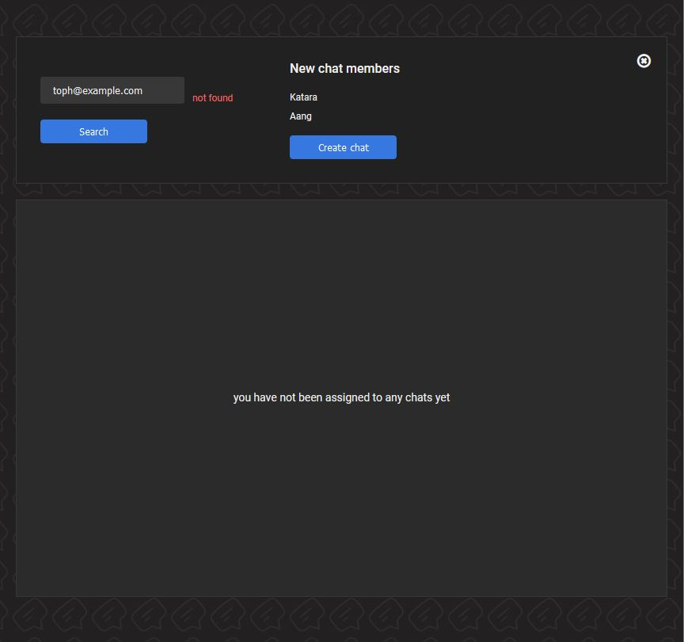

AWS AppSync Chat App
This chat app was created using AWS AppSync, via Serverless Framework, with a React and Styled-Components front-end.
All backend and API functionality are handled by AWS services - Cognito for authentication, DynamoDB for the database, Lambda for more complicated functionality, and AppSync with JavaScript resolvers and a GraphQL API to handle real-time functionality.
Purpose of project
I created a similar app at work, as a feature of our large SaaS app. I considered showcasing that app in my portfolio, but there were a few new AWS AppSync features I wanted to try out, and I also wanted to choose my own color palette for the front-end.
By creating my own app, I was able to share it publicly and show my cloud and microservices experience, which had been limited to private work repositories.
Design
Colours
The original app I created at work had a light design with a white background, following the styling of the larger app. For my own app I created a dark-mode colour palette, inspired by Discord. It’s well known by now that dark-mode apps are easier on the eyes, and it makes sense to use this for a chat app, since users may spend a lot of time in the app.
The minimal colour palette allows users to focus on the most important elements and quickly tell apart their own messages from other users. It is fairly monochrome, with a few different shades of gray and two shades of blue for accents and message bubbles. A repeating chat-bubble SVG is overlaid on a dark background, which adds texture and ensures that chat components don’t appear to be just floating there. In the future, for users to express their own preferences, I may add the option for users to choose from a larger set of accent colours.
When working with a dark-mode colour palette it’s important to be aware of saturation and contrast. The more contrasting the colours are, the harder the text can be to read. While our initial thought may be to use pure black for the background, and pure white for text, it’s more readable, thus more accessible to users, to choose subdued colours. In this app, dark grays are used instead of black, and a slightly off-white is used for text.
The same holds true for the other colours you select. Highly saturated colours can also be hard on the eyes, even though one’s first instinct might be to use a very bright colour to stand out against the dark background. A less saturated colour will still stand out, but it will be readable. A reduced contrast UI will end up being more visually appealing as well.
Functionality
The flow of this app was kept as simple as possible. A user is first presented with a login page. If they don’t have an account, they can create one, and then will be redirected to the login page.
There are three main components to the app’s main interface: the chat list, message area, and create-chat component.
The user’s chats are listed to the side, and the current selected chat will be highlighted with a medium-gray colour. Once selected, the chat messages will populate in the message area. Initially the 10 most recent messages load; if the user scrolls to the top of the message area, they can load another 10 messages. This helps save on database reads and is standard in any modern chat app.
If the user is new to the app they will not have any chats in their chat list, but they can create them by clicking the “Add new chat?” button. This opens a component where they can search for friends via email. There is no limit to how many users can be added to one chat, though perhaps there should be in the future to prevent extremely large chats. Currently every user will require a unique email address, but they can choose any username. To protect users’ privacy, a possible future feature could be to allow users to block their email from being searched, or block specific users from finding them.
Development
Why I chose to use AWS AppSync
To create a chat app you need to ensure messages appear on the screen in real time. There needs to be a bi-directional relationship between the front-end and database, and the front-end must display messages immediately upon their creation without refreshing the page. One option for this could have been to use Apollo Client WebSocket Link.
I attempted this with my original work project. The front-end set-up was simple, but I quickly realized that setting up a web-socket on a serverless app built with AWS Lambda would be challenging. This required manual set-up of the web-socket, creating a new connection each time a user logged in, and storing the connection information in the database. It was much simpler to use AppSync, which removed all of this manual work.
The nitty-gritty of my AppSync experience
AppSync allows you to create a GraphQL API that connects to your backend datasources. Resolvers are the functions in your API that handle incoming requests. For my projects, resolvers generally will receive a request, get something from or put something into a DynamoDB database, and return some data to the front-end. A few times I used Lambda functions, connected to DynamoDB, as my datasource, which I will elaborate on later.
AppSync initially used VTL (Velocity Template Language), which is a Java-based language, to write mapping template code (basically equivalent to resolvers). When I began the original project, AWS just began to roll out JavaScript-based resolvers in a limited capacity. Since it was such a new functionality, and all the AppSync tutorials by my favorite devs on social media were using VTL, I decided to use VTL as well. It was time consuming for me to learn, and debugging in AppSync was often difficult, but eventually I figured it out and delivered a working app to my team.
When it came time for me to create my own project, JavaScript could be used with any type of resolver. I assumed this would make my life easier and coding this project would be faster. This was not the case. JavaScript is not run on a browser or Node.js runtime, but on a special APPSYNC_JS runtime, and there are limits on what JavaScript features may be used. For example, try/catch statements are not supported, making error handling challenging; you need to use their built-in functions. async/await and promises are also not supported. While I understand the logic behind this - awaiting promises is too time-consuming and your AppSync API is supposed to be fast - this presented challenges for my multi-step code.
Pipeline resolvers are made for this scenario. This could have worked, except there were some cases when I needed to query multiple items from the database using a global secondary index (GSI). There is a built-in AppSync function called BatchGet which I tried to use, however it will only allow you to get items using the primary key, no secondary indexes, so it didn’t work for me.
At this point I could have re-worked my data structures, but instead I put my JavaScript code into Lambda functions and used them as the datasource. I was able to use the JavaScript functionality I was familiar with and write the exact DynamoDB queries I needed. For my purposes this worked fine, and I never noticed any performance issues.
Take-aways and future updates
Overall I enjoyed learning AppSync. It’s a big time-saver to not have to manually set up web-sockets. Writing the resolvers was the most challenging aspect, since there seemed to be a lot of restrictions on what could be included in your code. I often received errors that said “there is a problem with the code” but nothing more, so debugging was difficult.
Working with GraphQL is a great experience since it helps me think of my code in terms of inputs and outputs, and it always makes me want to work more with types, specifically using TypeScript. I would have written the backend for this chat app in TypeScript, but I struggled with importing my own types into the code. Again, I got the “there is a problem with the code” error, so it wasn’t clear what exactly the problem was.
It seems as if AppSync wants you to use it to auto-generate all your types, schemas, and datasources, when I want to write it all myself. In the future I’d like to revisit this; I’d like to see if the developers make this process easier, or dive deeper into the docs to find out if I missed any key details for TypeScript implementation. Perhaps in this environment of AI and cloud services, I need to better embrace the ability of these kinds of services to auto-generate my code and infrastructure for me, if I want to produce software quickly.